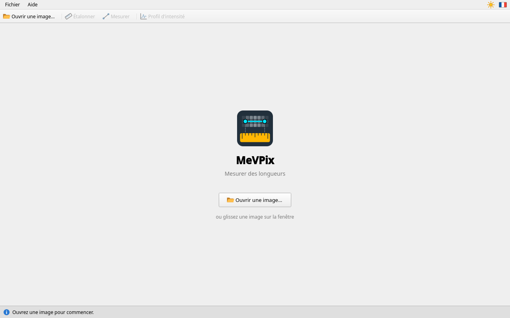
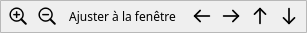
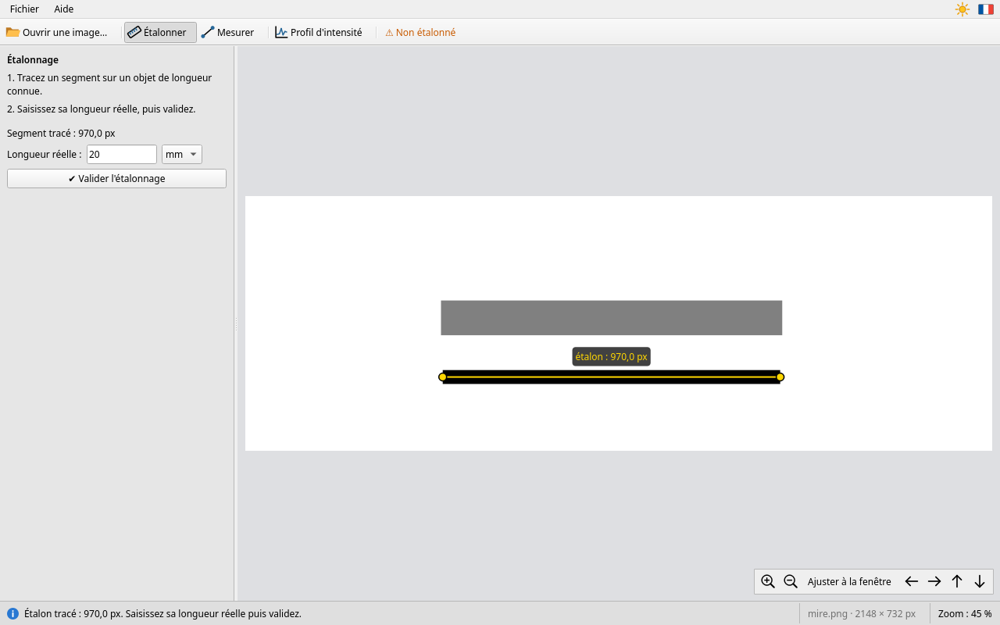
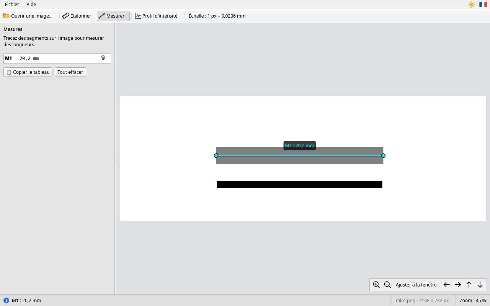
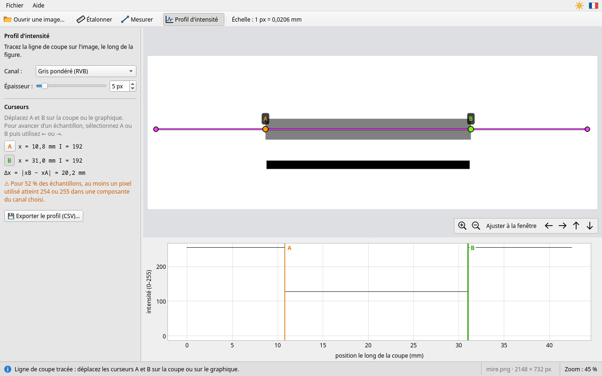
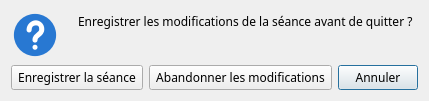
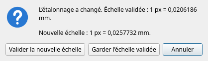
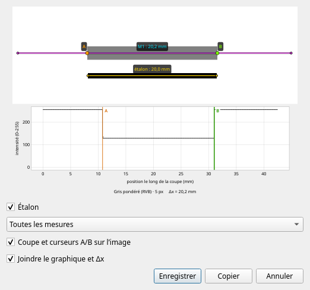

MeVPix — Notice d’utilisation
Mesurer des longueurs et relever un profil d’intensité sur une image · version {{version}}
Ouvrir une image ou une séance
Pour prendre en main le logiciel avec une classe, commencez par la mesure d’une rondelle ou l’étude de franges de Young.
Pour travailler sur votre propre photo, cliquez sur Ouvrir une image…,
appuyez sur Ctrl+O ou déposez un fichier sur la fenêtre. Les mêmes commandes ouvrent
une photo et une séance .mevpix.
- Une image ouvre un nouveau travail avec l’outil Étalonner. Le champ de longueur réelle est vide. Vous pouvez aussi passer directement à Mesurer ou au Profil d’intensité et travailler en pixels.
- Une séance rouvre l’image qu’elle contient avec l’outil, l’étalonnage,
les mesures et la coupe enregistrés. Le fichier
.mevpixsuffit pour reprendre sur un autre poste.
Formats d’image reconnus sur ce poste
{{formats}}
La liste provient des lecteurs d’images installés avec Qt. La prise en charge de HEIC et HEIF dépend de ces lecteurs. MeVPix applique l’orientation enregistrée dans la photo.
Cliquez sur une capture pour l’ouvrir à sa taille d’origine.


Deux TP avec leurs images
Les deux images ci-dessous sont fournies avec la notice. Enregistrez le PNG choisi dans votre
dossier de TP, puis ouvrez-le dans MeVPix. Chaque élève peut conserver ses pointages dans un fichier
.mevpix et les confronter à ceux d’un autre binôme.
Mesurer les diamètres d’une rondelle
Télécharger l’image de la rondelle (PNG)

- Avec Étalonner, reliez les milieux des deux traits verticaux qui délimitent la barre blanche en bas à gauche. Saisissez 20, choisissez mm et validez. La barre occupe environ 300 px, soit une échelle proche de 0,067 mm par pixel.
- Avec Mesurer, tracez le diamètre extérieur en passant par le centre, puis celui du trou. On attend environ 30 mm et 12 mm. Une corde qui passe à côté du centre donne une valeur plus petite.
- Refaites un pointage suivant une autre direction. Comparez les valeurs et discutez le choix du bord sur le chanfrein. Utilisez Copier le tableau pour réunir les mesures de la classe.
Déterminer l’interfrange des fentes de Young
Télécharger les deux poses des franges (PNG)

- Étalonnez avec la barre de 10 mm sous la pose de référence, à gauche. Sélectionnez Profil d’intensité. Tracez une coupe horizontale passant par le centre des taches de cette pose. La touche Maj maintient l’horizontale.
- Repérez le maximum central. Placez A sur le deuxième maximum à sa gauche et B sur le deuxième à sa droite. Vous couvrez quatre interfranges. Divisez Δx par quatre. Sur l’image, on lit environ 6,1 mm entre ces pics, soit un interfrange proche de 1,5 mm.
- Comparez à la valeur théorique dans le plan focal, i = λf/a. Avec λ = 632,8 nm, f = 1,000 m et un entraxe a = 400 µm, elle vaut 1,58 mm. Enregistrez la séance avant de tracer une seconde coupe sur la pose longue, à droite. Observez le sommet aplati des pics et le signalement de saturation.
La fenêtre et le zoom
La barre d’outils permet d’ouvrir un fichier, de choisir Étalonner, Mesurer ou Profil d’intensité et de lire l’échelle courante. Le panneau de gauche présente les commandes et les résultats de l’outil choisi. Ses tracés apparaissent sur la photo. Changer d’outil conserve les tracés des autres outils.


Agrandir l’image et la déplacer
Les commandes se trouvent en bas à droite de l’image, au-dessus du graphique lorsqu’il est ouvert. La loupe + agrandit le centre de la vue, la loupe − le réduit. Ajuster à la fenêtre recentre l’image entière.


Pour zoomer autour d’un détail, placez le pointeur dessus et tournez la molette. Le pincement fonctionne sur les pavés tactiles qui transmettent ce geste. Pour déplacer l’image agrandie, faites glisser avec le bouton droit ou central enfoncé. Le zoom facilite le pointage. Les longueurs et le profil sont toujours calculés dans les coordonnées de la photo d’origine.
La barre d’état indique le résultat de la dernière opération à gauche, le nom de l’image, ses dimensions et le zoom à droite. Le soleil ou la lune et le drapeau, à droite des menus, changent le thème et la langue. Pour agrandir les textes et les boutons de toute l’interface, utilisez Ctrl++.
Étalonner et mesurer
Sur une photographie de TP, placez une règle ou une mire dans le plan de l’objet et photographiez ce plan de face. MeVPix applique la même échelle à toute la photo. Une règle placée plus près de l’appareil ou une forte perspective fausse donc les longueurs. Choisissez deux graduations éloignées pour réduire l’effet d’une petite erreur de pointage sur l’étalon.
- Avec Étalonner, maintenez le bouton gauche et tracez un segment d’un bout à l’autre d’une longueur connue sur l’image. Cette référence apparaît en jaune. Maintenez Maj pour tracer à l’horizontale ou à la verticale.
- Dans Longueur réelle, saisissez un nombre positif, avec une virgule ou un point décimal. Choisissez µm, mm, cm ou m dans la liste. Cliquez sur Valider l’étalonnage ou appuyez sur Entrée dans le champ. La barre d’outils indique la longueur correspondant à un pixel et MeVPix active Mesurer.
- Tracez les longueurs à mesurer. Chaque segment turquoise reçoit un numéro (M1, M2…) et une ligne dans le tableau. Sans étalonnage validé, les longueurs s’expriment en px. Valider une échelle actualise aussi les mesures déjà tracées. Au-delà de douze mesures, faites défiler le tableau.
Le calcul utilise le rapport des longueurs en pixels. Si 100 px représentent 20 mm, l’échelle vaut 20/100 = 0,20 mm par pixel et un segment de 75 px mesure 15 mm. Pour estimer l’incertitude, tenez compte de l’étalon, du pointage et de la prise de vue. Les décimales affichées résultent de l’arrondi du calcul.


Un nouveau segment commence sur la photo. Si la souris sort de l’image pendant le tracé, l’extrémité s’arrête au bord. Si vous relâchez une poignée à moins d’un pixel de l’autre, le segment reprend sa position de départ.
Pour corriger un tracé, reprenez l’une de ses poignées dans l’outil correspondant. Pendant le geste, Échap rétablit la position de départ ou abandonne le nouveau segment. Cliquez sur la corbeille d’une ligne pour supprimer sa mesure. Au clavier, placez-vous sur cette cellule puis appuyez sur Espace ou Entrée. Tout effacer vide le tableau.


Après le geste, Ctrl+Z annule une modification à la fois, y compris un déplacement, une validation d’échelle, une modification du profil ou un effacement du tableau. L’historique garde jusqu’à 100 modifications du travail ouvert. Rouvrir un fichier démarre un nouvel historique.
Lire un profil d’intensité
Choisissez Profil d’intensité. Le graphique apparaît sous la photo. Tracez une coupe avec le bouton gauche. Maintenez Maj pour une coupe horizontale ou verticale. Le début du tracé fixe l’origine des abscisses. Une nouvelle coupe remplace la précédente et replace A au quart de la coupe, B aux trois quarts. Un second clic sur l’outil revient à Mesurer.
Si une ancienne séance s’ouvre avec les extrémités de la coupe superposées, écartez-les d’au moins un pixel de la photo pour retrouver le graphique et l’export CSV.
Placer A et B
Sur la photo, faites glisser le repère orange A ou le repère vert B le long de la coupe rose. Dans le graphique, un clic ou un glissement déplace le curseur le plus proche en abscisse. Pour régler un curseur précis, cliquez sur A ou B dans le panneau, puis utilisez ← ou → pour atteindre l’échantillon précédent ou suivant. Quand le graphique a le focus, les touches A et B sélectionnent aussi le curseur.
Le panneau affiche la position x et l’intensité I de chaque curseur, puis leur écart Δx = |xB − xA|, en pixels ou dans l’unité étalonnée. Au survol du graphique, le point et l’intensité indiqués suivent la courbe à l’abscisse du pointeur.


Choisir le canal et la largeur de bande
L’ordonnée I est un niveau numérique entre 0 et 255. Choisissez Rouge, Vert ou Bleu pour lire une composante. Gris pondéré (RVB) calcule 0,299 R + 0,587 V + 0,114 B à partir des valeurs codées de la photo. Pour relier ces niveaux à un éclairement ou à une puissance lumineuse, il faut connaître la réponse de la caméra et les traitements appliqués à l’image.
L’épaisseur de 1 à 50 px fixe le nombre de points moyennés perpendiculairement à la coupe. Sur des franges rectilignes, élargir la bande atténue le bruit si les maxima restent à la même abscisse sur toute sa largeur. Une bande trop large mélange des détails voisins. Le profil comprend les deux extrémités de la coupe et environ un échantillon par pixel, avec interpolation bilinéaire. Au bord, MeVPix utilise les points disponibles et signale les bandes tronquées.
Si le décodeur fournit plus de 8 bits par composante, la barre d’état indique la conversion, par exemple 16 → 8 bits. Le profil et l’image conservée dans la séance utilisent ces valeurs converties. Le pourcentage de saturation compte les échantillons auxquels contribue au moins un pixel de valeur 254 ou 255 dans le canal choisi. En gris pondéré, une seule composante saturée suffit. Une moyenne inférieure à 254 peut donc signaler une saturation. Pour comparer des hauteurs de pics, privilégiez une prise de vue où le canal étudié reste sous ce seuil.
Examiner une partie du graphique
La molette agrandit ou réduit l’axe horizontal autour du pointeur. Maj+molette déplace la vue horizontalement. Un double-clic rétablit la courbe entière en conservant A, B et Δx. Lorsque plusieurs échantillons occupent une même colonne à l’écran, le tracé conserve leurs valeurs extrêmes.
Enregistrer et reprendre une séance
Pour ramasser un TP, demandez le .mevpix si vous souhaitez reprendre les pointages
des élèves. Pour distribuer votre propre séance à la classe, faites-la ouvrir puis enregistrer sous
un nom de binôme avant de poursuivre. Pour une étude de la réponse du capteur, conservez également
le fichier original à sa profondeur d’acquisition.
Utilisez Fichier › Enregistrer la séance ou Ctrl+S. Au premier
enregistrement d’une image, choisissez le nom et le dossier du fichier .mevpix. Son nom
apparaît dans le titre de la fenêtre. Les sauvegardes suivantes écrivent dans ce fichier. Pour travailler
sur une copie, choisissez Fichier › Enregistrer la séance sous…. La copie devient la séance courante.
Vous pouvez continuer à mesurer pendant l’écriture. Une mesure tracée après le clic sur Enregistrer garde l’astérisque dans le titre. Appuyez de nouveau sur Ctrl+S pour l’inclure dans le fichier.
Si une autre fenêtre a enregistré la même séance, Enregistrer une copie… permet de choisir un autre nom et de garder les deux versions. Annuler vous ramène à votre travail. Si un enregistrement est en cours, vous pouvez aussi réessayer un peu plus tard.
Une séance contient l’image de travail en pleine résolution, l’étalon tracé, la longueur et l’unité saisies, l’échelle validée, les mesures et l’outil sélectionné. Pour le profil, elle conserve la coupe, le canal, l’épaisseur et les positions A et B. À la réouverture, l’image s’ajuste à la fenêtre et le graphique retrouve la vue complète.
Un astérisque dans le titre signale les modifications à enregistrer. Zoomer, déplacer la vue ou simplement changer d’outil conserve l’état de sauvegarde. À la fermeture ou avant de remplacer le travail modifié par un autre fichier, Enregistrer la séance sauvegarde puis poursuit l’opération, Abandonner les modifications poursuit sans les sauvegarder et Annuler revient au travail courant. Une sauvegarde annulée ou échouée laisse la séance ouverte.


Copier et exporter
| Ce que vous voulez transmettre | Sortie à choisir |
|---|---|
| Un travail à poursuivre au prochain cours | Séance .mevpix avec la photo et les tracés modifiables |
| Les longueurs de M1, M2… pour le tableur | Copier le tableau |
| Les valeurs de la courbe pour une exploitation numérique | Profil en CSV |
| Une figure avec les mesures pour un compte rendu | Image annotée en PNG ou dans le presse-papiers |
Quelle échelle sera utilisée ? Si l’étalon, la longueur ou l’unité ont changé depuis la validation, le symbole ⚠ accompagne l’échelle. Avant la copie du tableau, l’export CSV ou l’image annotée, MeVPix affiche l’échelle validée et la nouvelle échelle si la saisie est valable. Valider la nouvelle échelle l’applique à la séance et à la sortie. Garder l’échelle validée utilise la précédente et garde la saisie en attente. Annuler interrompt l’opération. Une saisie invalide laisse disponible l’échelle déjà validée.


Coller le tableau des longueurs
Dans Mesurer, cliquez sur Copier le tableau, puis collez dans un
tableur ou un document avec Ctrl+V. Une tabulation sépare les deux colonnes.
La première, Mesure, contient M1, M2… La seconde donne la Longueur
dans l’unité indiquée en en-tête, par exemple Longueur (px) ou Longueur (mm).
Les nombres utilisent la virgule en français et le point en anglais.
Enregistrer les valeurs du profil en CSV
Dans Profil d’intensité, cliquez sur Exporter le profil (CSV)….
Le fichier contient tous les échantillons de la coupe, d’une extrémité à l’autre, quel que soit le
zoom ou l’intervalle A–B. La première colonne donne la position x dans l’unité indiquée
en en-tête. La seconde, I, donne l’intensité avec deux décimales.
| Langue de MeVPix | Nom proposé | Séparateur de colonnes | Séparateur décimal |
|---|---|---|---|
| Français | profil.csv | Point-virgule | Virgule |
| Anglais | profile.csv | Virgule | Point |
MeVPix ajoute .csv à un nom saisi sans extension et demande confirmation avant de remplacer
un fichier existant. Le CSV s’importe dans MeVReg ou dans un tableur. Ce code lit un export français avec pandas.
import pandas as pd
profil = pd.read_csv("profil.csv", sep=";", decimal=",")
profil.plot(x=profil.columns[0], y="I")Copier ou enregistrer une image annotée
Ouvrez Fichier › Image annotée…. Choisissez toutes les mesures, une mesure par son numéro ou aucune. La case Étalon est disponible si le segment correspond en longueur à la référence validée. Si une coupe existe, Coupe et curseurs A/B sur l’image permet de la superposer à la photo. L’option indépendante Joindre le graphique et Δx ajoute sous la photo le profil entier avec ses axes, ses curseurs et une légende indiquant le canal, l’épaisseur et Δx.
Vérifiez l’aperçu, puis choisissez Copier pour le presse-papiers ou
Enregistrer pour un PNG. Les deux sorties reproduisent la même composition à la
résolution de la photo, même si vous aviez zoomé à l’écran. Elles conservent aussi son profil de
couleur lorsqu’il est présent. Le nom proposé se termine par
-MeVPix.png. Les annotations sont intégrées aux pixels
du PNG. Gardez la séance .mevpix pour pouvoir encore déplacer les tracés.


Souris et clavier
| Action | Commande |
|---|---|
| Ouvrir une image ou une séance | Ctrl+O ou glisser-déposer |
| Enregistrer la séance | Ctrl+S |
| Enregistrer sous un autre nom | Fichier › Enregistrer la séance sous… (Ctrl+Maj+S si affiché dans le menu) |
| Tracer un segment ou déplacer une poignée | Glisser avec le bouton gauche. Maintenir Maj pour un segment horizontal ou vertical |
| Valider l’étalonnage | Entrée dans le champ de longueur |
| Abandonner le tracé ou le déplacement en cours | Échap |
| Annuler la dernière modification | Ctrl+Z. Pendant la saisie, le champ gère l’annulation du texte |
| Zoomer sur l’image ou retrouver la vue entière | Loupes + et − ou molette. Bouton Ajuster à la fenêtre pour la vue entière |
| Déplacer l’image | Cliquer sur une flèche à côté des loupes ou glisser avec le bouton droit ou central de la souris |
| Déplacer un curseur d’un échantillon | Dans le graphique, A ou B, puis ← ou → |
| Naviguer dans le graphique | Molette pour zoomer, Maj+molette pour défiler, double-clic pour tout revoir |
| Redimensionner les textes et boutons | Ctrl++ ou Ctrl+−. Ctrl+0 rétablit la taille normale |
| Ouvrir la notice | F1 ou Aide › Notice d’utilisation… |
Dépannage
- Les mesures en mm sont toutes trop grandes d’un même facteur.
- Vérifiez l’unité de la longueur saisie, puis pointez une deuxième longueur connue dans le même plan. Un écart d’un facteur dix peut venir d’une confusion entre cm et mm. Si l’écart dépend de la position sur la photo, vérifiez l’orientation de la règle et la perspective.
- Le profil montre un plateau au sommet d’une frange.
- Consultez l’indication de saturation pour le canal étudié. Essayez une pose plus courte et reprenez la même coupe. Dans le TP sur les franges, comparez les deux poses fournies.
- Le format de l’image est inconnu.
- Dépliez la liste des formats reconnus sur ce poste. Elle apparaît aussi au survol du message d’erreur. Si le format manque, ouvrez une copie convertie en PNG ou JPEG. Un échec d’ouverture laisse le travail courant en place.
- MeVPix signale un JPEG incomplet ou endommagé.
- Recopiez la photo depuis l’appareil ou le dossier d’origine. Attendez la fin du transfert avant d’ouvrir la copie. Les mesures déjà à l’écran restent disponibles.
- « Valider l’étalonnage » est grisé, ou les mesures restent en px.
- Tracez une référence d’au moins un pixel sur l’image. Saisissez seulement sa longueur positive et choisissez l’unité dans la liste. Validez pour convertir les mesures existantes.
- Je cherche une mesure ou une coupe après avoir changé d’outil.
- Revenez à Mesurer pour les segments M1, M2… ou à Profil d’intensité pour la coupe. Si le graphique est vide, tracez une coupe sur l’image avec cet outil.
- La molette agrandit le graphique alors que je veux agrandir la photo.
- Placez le pointeur sur la photo ou utilisez les deux loupes en bas à droite de l’image. Pour rétablir la taille du texte de l’interface, utilisez Ctrl+0.
- L’échelle s’affiche en orange avec le symbole ⚠.
- La référence saisie diffère de celle qui a servi aux mesures. Revenez à Étalonner pour la vérifier. Vous pouvez aussi choisir l’échelle au moment de l’export.
- Tout le CSV apparaît dans une seule colonne.
- Choisissez le séparateur correspondant à la langue utilisée au moment de l’export. Les deux conventions figurent dans Enregistrer les valeurs du profil en CSV.
- L’enregistrement de ma séance a échoué.
- Le message de la barre d’état indique le fichier concerné. Utilisez Fichier › Enregistrer la séance sous… pour choisir un dossier où vous pouvez écrire.
Installer MeVPix
Les distributions pour Windows x64 et Linux x86_64 sont disponibles sur la page des versions de MevSuite.
- Windows, version portable. Décompressez
MeVPix-windows-x64.zipet lancezmevpix.exe. Copiez le dossier entier pour déplacer l’application. - Windows, installateur.
MeVPix-windows-x64-setup.exeinstalle le programme pour tous les utilisateurs, par défaut dansC:\Program Files\MeVSuite\MeVPix, et enregistre l’association des fichiers.mevpix. Le raccourci se trouve dans le dossier MeVSuite du menu Démarrer. La désinstallation est accessible depuis les Paramètres de Windows. - Linux. Installez le paquet
.debpour Ubuntu ou.rpmpour Fedora, ou rendez le fichier.AppImageexécutable et lancez-le. Les paquets.debet.rpmdéclarent le type de fichier.mevpixau bureau.
Déploiement silencieux sous Windows
Cette commande installe MeVPix avec les droits d’administration depuis WAPT, une GPO ou un script.
MeVPix-windows-x64-setup.exe /VERYSILENT /SUPPRESSMSGBOXES /NORESTARTCette commande désinstalle MeVPix du dossier par défaut.
"C:\Program Files\MeVSuite\MeVPix\unins000.exe" /VERYSILENT /SUPPRESSMSGBOXES /NORESTARTRéglages du poste
Au premier lancement, MeVPix utilise le thème du bureau et la première langue de préférence
prise en charge, avec l’anglais par défaut. L’unité initiale est le mm, le canal le gris pondéré et
l’épaisseur de bande 5 px. Le fichier mevpix.ini conserve les préférences entre deux lancements.
| Système | Réglages personnels | Réglages imposés au lancement |
|---|---|---|
| Windows | %APPDATA%\MeVSuite\mevpix.ini | mevpix.ini à côté de mevpix.exe |
| Linux | $XDG_CONFIG_HOME/MeVSuite/mevpix.ini, normalement ~/.config/MeVSuite/mevpix.ini | /etc/MeVSuite/mevpix.ini, ou à défaut mevpix.ini à côté de l’exécutable |
MeVPix lit d’abord le fichier personnel, puis applique les clés du fichier imposé. Il enregistre les
changements de préférences dans le fichier personnel. Aide › À propos de MeVPix…
indique les chemins utilisés. Une ligne du fichier prend la forme clé = valeur.
Par exemple, pour commencer chaque TP en français avec une référence exprimée en millimètres et un profil en niveaux de gris moyenné sur cinq points, placez ces lignes dans le fichier imposé du poste.
language = fr
unit = mm
channel = luminance
band = 5Ces valeurs initialisent un nouveau travail. Ouvrir une séance enregistrée rétablit son unité, son canal et sa largeur de bande.
| Clé | Valeurs |
|---|---|
language et theme | auto, fr, en pour la langue. auto, light, dark pour le thème. |
unit et channel | um, mm, cm, m pour l’unité. luminance, red, green, blue pour le canal. |
band et ui_zoom | Épaisseur de 1 à 50 px. Facteur d’interface de 0.5 à 3.0. La largeur de la fenêtre limite l’agrandissement effectivement affiché. |
last_dir | Dossier proposé par les boîtes de dialogue. |
window_width, window_height et maximized | Largeur et hauteur de la fenêtre en taille normale. true ou false pour l’état maximisé. |
Notice, contact et licence
F1 ouvre la notice de la langue courante dans le navigateur. Les deux pages, les captures
et les images des deux TP sont intégrées à MeVPix et fonctionnent hors connexion. Le programme
les met à disposition dans mevpix-help dans le cache personnel, ou dans un dossier temporaire privé
si le cache est inaccessible. La barre d’état donne le chemin de la page ouverte.
En cas d’erreur fatale, le message indique le chemin de mevpix.log si le journal
a pu être écrit. Ce fichier, situé à côté des réglages personnels, décrit la dernière erreur.
Pour signaler un problème, indiquez la version, le système et l’action effectuée. Joignez le journal s’il est disponible.
Vous pouvez contacter Rémi MEVAERE à suite@sciences-physiques.net. MeVPix est distribué sous licence MIT. Aide › À propos de MeVPix… présente les composants et leurs licences. À propos de Qt… indique la version et la licence de Qt.